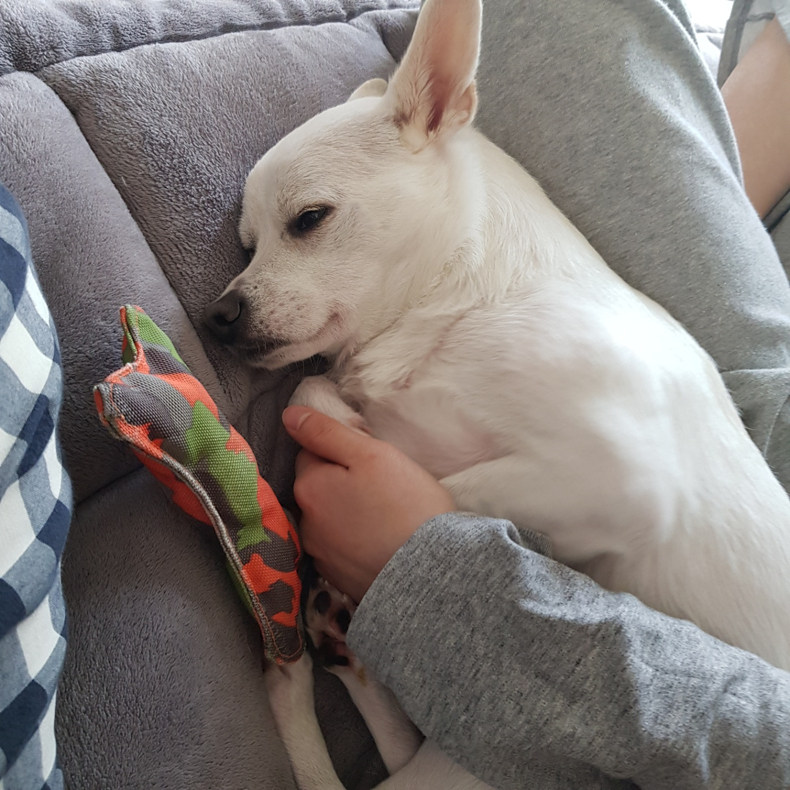

My dog, 채소
우리집 반려견 채소에 대해 소개합니다.

흰색 강아지, 채소
채소는 저희집에 왔을 때 생후 3개월도 안된채 왔습니다.처음 집에 오자마자 잘 적응한 채소는 대자로 뻗어 자기 시작했는데요
저는 강아지와 함께 잔다는 사실에 정말 행복했습니다.
채소는 우리집에 오기 전 구조견였습니다.
학대를 당하다 구조받은 강아지인거죠.
처음엔 낯선 사람들보고 짖기도 하고 산책도 무서워서 나가질 못했습니다.
3개월 후, 점점 나아지더니 개춘기때는 집안 식물들을 뽑아 이리저리 돌아다녔습니다.
채소는 아침7시, 저녁 6시만 되면 밥달라고 애교를 부리는 강아지가 되었습니다.
저희 가족은 이런 애교에 넘어가 밥을 많이 주곤 합니다.
살이 10kg까지 쪄버린 채소에게 아쉽지만 이젠 조금 주려합니다.
우리 채소의 건강을 위해서! 우리 가족의 행복을 위해서!